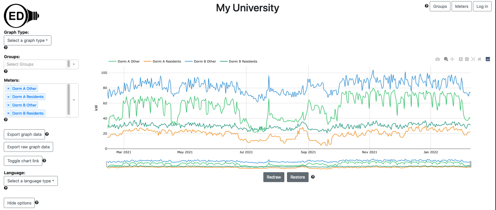
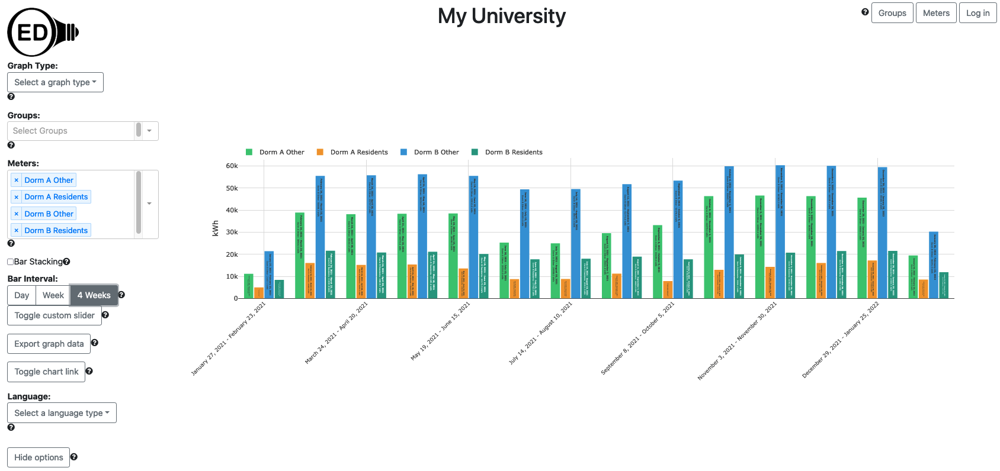
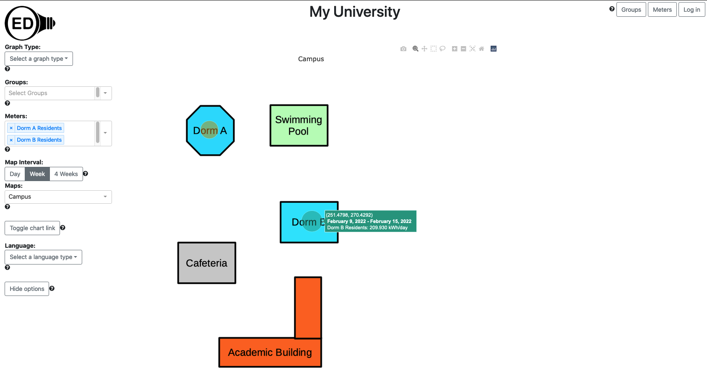
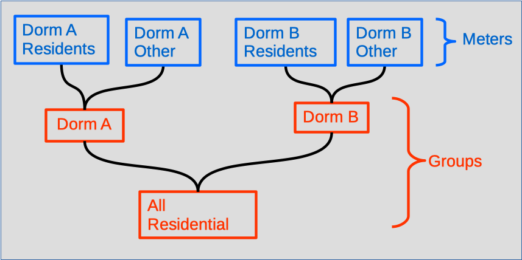
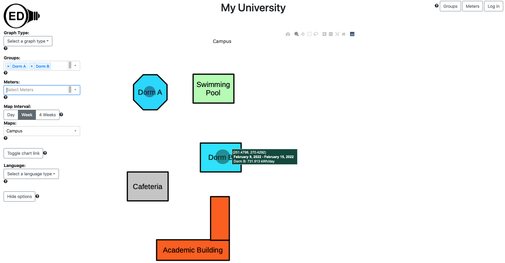
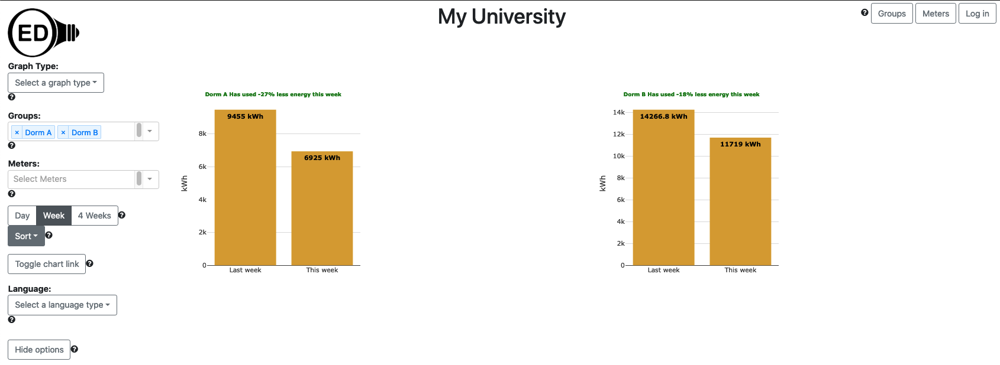
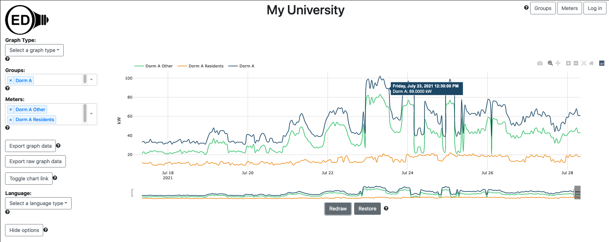

The OED system has a number of features. This page describes many of them in the context of how they might be used at an academic institution along with links to further documentation. The features page overviews OED's capabilities in terms of each feature rather than uses and shows a number of features not touched on this page. Some people may wish to see a number of these features by using our live demo site. Also note that there are many options for graphics and this page often gives one example. The "Further information" links to the OED help web pages provide all the options.
The uses and primary features they demonstrate that will be discussed are:
Different people want to see energy usage in different ways. A classic use of an energy dashboard is to show graphics of usage such as
We will now look at each of these. Note that OED uses the term meter to apply to a data collection item since it is often a physical meter on a campus. In what follows, there are four meters with one year of data for electrical usage with the following meaning:
The following graphic shows the usage for each of the four meters as a line graph of usage vs. time:
The following graphic shows the same usage but as a bar graphic where each bar represents four weeks of usage:
The following graphic shows the residents usage in Dorms A & B as a map where the circle size indicates relative usage. All four meters could have been shown but since each pair is for the same building it is harder to see the individual circles for one building. In this case it shows average usage for one week where the hover shows the exact value for Dorm B.
Further information: Graphical display of data, Line Graphic, Bar Graphic and Map Graphic.
An academic institution often wants to show usage for different areas on campus. For example, you might want to show the total usage for all residential buildings. OED can aggregate (sum) any combination of meters via its group feature. In this example, we will show the total electrical usage for each Dorm and for both dorms together. Graphically this means doing:
The image shows that "Dorm A Residents" and "Dorm A Other" meters are grouped to form "Dorm A". When you graph "Dorm A" you will get the sum of the two underlying meters. The image shows a similar "Dorm B" group. It also shows that you can group "Dorm A" and "Dorm B" to create the "All Residential" group. This shows the groups in OED are very general and can be composed of any combination of meters and groups. This can greatly simplify grouping items as they can be built from previous groups. The following shows a map that is very similar to the one for meters but now showing the total usage for "Dorm A" and "Dorm B" as groups. The line or bar graphic can also show groups.
Further information: Groups.
To engage students, some academic institutions use energy competitions. In a common usage, each dorm completes to see which ones can reduce their usage the most. The comparison graphic in OED supports this type of competition. In the following figure, the usage from last week vs. this week is displayed for each dorm (group) where the title gives the percentage change (green for less and red for more). The graphs are sorted so the dorm with the greatest decrease is first but you can choose to do the least first or alphabetically. You can include as many items as you wish on one comparison page (only two shown here).
Further information: Compare Graphic.
It is common for an academic institution to want to graphically show energy usage on a website. Someone can create any graphic view they wish and then click the "Toggle chart link" button to reveal a web address (URL). That web address can be reused anywhere (web page, email link, etc.) and it will recreate the OED graphic that was shown when it was created. One feature is that the link recreates the same look but with current data. What this means is that if you had a link to a compare graphic to show usage for the last week that was created at the start of January, if some used it in the middle of February they would see the same comparisons (such as the two dorms in the example above) but for the current week in February.
Further information: Chart Links.
For many reasons, OED normally shows daily points when a line graph is first shown. Seeing this level of detail on energy usage is often sufficient for most users. Some users, such as energy managers and sustainability coordinators, may wish to see usage on shorter time scales to investigate interesting usage patterns. OED allows users to zoom in on time frames and scroll across times. You can also have OED redraw a graphic to get shorter time frames for each point. OED can display data as daily, hourly or the original raw meter data. This allows the user to see the data at appropriate time scales depending on need. The figure below shows hourly data in an area where the usage was higher than normal. One can see that starting about July 23, the usage has the highest spikes. This graphic has both the overall usage for Dorm A and the two meters that monitor its usage. The graphic clearly shows that it is Dorm A Other that is varying and causing the spikes and the Dorm A Residents are using more normal amount of electricity (but it is slowly going up). If you look at the line graphic above, you will see the spike in usage around this time but you cannot see the ones around it nor the fluctuations that are occurring. This new graphic with more frequent readings allows this level of detail to be shown. This figure also shows that you can get a hover at any point to see the usage at that time for any line in the graphic. Also note that the bar and map graphic will honor the time frame chosen on the line graphic so in this case would limit readings shown to July 17 to July 29.
Further information: Zooming & Scrolling.
When students are investigating energy usage, they often need to work interactively with the data. OED is somewhat unique in that it allows users to interactively choose what information to display including the meters, groups, time frame and frequency of points. OED uses a sophisticated program so that any user choice is normally displayed within one second. This allows users to look at the data in various ways to understand what is going on. As discussed above, this includes focusing on specific dates/times that are of interest. OED recognizes that there are times you want to have the energy data (readings) to analyze them outside OED. This could be to do a type of analysis OED does not support. To allow this, OED has two export features for line or bar graphics. The "Export graph data" gives you the energy data shown on the current graph. Thus, if you are showing the data with daily points then you will get one point for each day for each meter or group. The "Export raw graph data" exports at the resolution of the original meter data. For example, if the meter displayed collected readings every 15 minutes then you would get a point every 15 minutes. In either case, the export provides a CSV (comma separated values) spreadsheet file with the reading data. Given that OED can rapidly display any graphic, the user can use the capability to get the exact data they want before exporting. This reduces the size of files downloaded and allows users to take advantage of OED's capabilities to get grouped data, limited time frames, bar data, etc. This feature can also be useful to facilities and sustainability coordinators.
Obviously, the raw data normally creates a much larger file since it has more readings. To stop inadvertent downloads of large files, OED will warn the user if the file is larger than a site specified size. If the file is larger than another site specified size, then only users logged can download that data. OED allows sites to create as many users of this type as they want so a site can create a unique one for each person, class or other group. They can also be removed so access times can be limited.
Further information: Data Export and User roles.